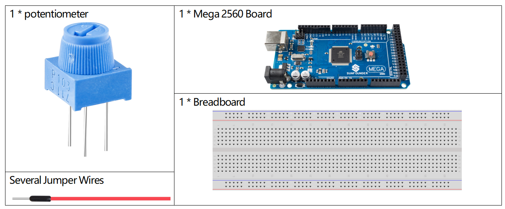

1.5 Analog lesen¶
Überblick¶
Mit dem Befehl analogRead () können Sie analoge Eingänge aus der physischen Welt über einen analogen Pin lesen, der für analoge Eingangselemente wie Potentiometer, Fotowiderstand, Sensoren zur Erkennung des Wasserstandes usw. geeignet ist. In diesem Artikel wird das Potentiometer als Beispiel zum Ablesen des Analogwerts seines Ausgangs verwendet.
Erforderliche Komponenten¶
Fritzing Circuit¶
In diesem Beispiel verwenden wir den analogen Pin (A0), um den Wert des Potentiometers abzulesen. Verbinden Sie die Stifte an beiden Enden des Potentiometers mit 5 V bzw. GND. Verbinden Sie den mittleren Pin mit A0.
Die Spannung des mittleren Pins wird als Analogwert an die Mega2560-Karte ausgegeben. Durch Drehen der Achse des Potentiometers können Sie die Spannung am mittleren Pin ändern, wodurch sich der Analogwert des von A0 erhaltenen Pins ändert.
Schematische Darstellung¶
Code¶
Nachdem der Code auf die Mega2560-Karte hochgeladen wurde, können Sie den Monitor für die serielle Schnittstelle öffnen, um den Lesewert des Pins anzuzeigen. Wenn die Welle des Potentiometers gedreht wird, druckt der Monitor der seriellen Schnittstelle den Wert, der zwischen „0“ und „1023“ wechselt.
Code-Analyse¶
Damit Arduino IDE den von der elektronischen Komponente auf die Mega2560-Karte übertragenen Wert drucken kann, müssen Sie die serielle Kommunikation in setup () starten und die Datenrate auf 9600 einstellen.
Serial.begin(9600);
Verwenden Sie die Anweisung analoglRead () in loop (), um den vom analogen Pin A0 erfassten Pegelzustand zu lesen und eine Variable zum Speichern des Pegelzustands zu deklarieren.
int sensorValue = analogRead(A0);
Drucken Sie den in der Variablen gespeicherten Wert auf dem seriellen Monitor.
Serial.println(sensorValue);
Verwenden Sie Verzögerung () -Anweisungen, um die Druckergebnisse leicht beobachten zu können.
delay(1);
※ Analog-Digital-Wandler¶
Das Arduino verfügt über eine Schaltung, die als Analog-Digital-Wandler oder ADC bezeichnet wird und diese sich ändernde Spannung liest und in eine Zahl zwischen 0 und 1023 umwandelt. Wenn die Welle vollständig in eine Richtung gedreht wird, werden 0 Volt an den Stift angelegt, und der Eingangswert ist 0. Wenn die Welle vollständig in die entgegengesetzte Richtung gedreht wird, werden 5 Volt an den Stift angelegt und der Eingangswert beträgt 1023. Dazwischen gibt analogRead () eine Zahl zwischen 0 und 1023 zurück, die proportional zur an den Pin angelegten Spannung ist.